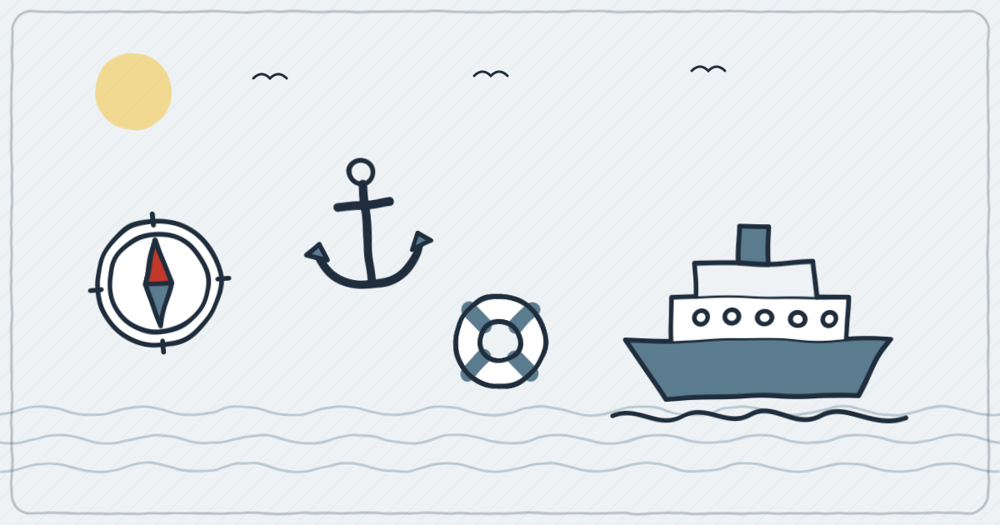

Cruise Words Explained: Aft, Tender, Muster and More

Forward is the front of the ship (the bow), aft is the back (the stern), port is left and starboard is right when facing forward. A tender is a small boat that carries you ashore when the ship anchors, and the muster drill is the compulsory safety check-in before departure.
Cruise jargon looks like a foreign language on your first booking confirmation, but it splits into four small groups: where things are on the ship, how you get on and off, what keeps you safe, and how the money works. Learn roughly 25 words and the deck plan, the daily program and the announcements all make sense.
Direction words: forward, aft, port and starboard
Ships use fixed directions so instructions mean the same thing wherever you are standing.
| Term | Plain English | Why you care |
|---|---|---|
| Forward (bow) | Front of the ship | Theatres are often forward; cabins here feel more motion |
| Aft (stern) | Back of the ship | Buffet and pools often aft; aft balconies see the wake |
| Midship | The middle section | Least motion, shortest walks, often priciest cabins |
| Port | Left side when facing forward | Scenic side on some routes; "port and left" both have four letters |
| Starboard | Right side when facing forward | The other scenic side |
| Deck | A floor of the ship | Numbered from the bottom; deck 5 is lower than deck 12 |
| Lido | The pool deck | Named after a Venetian beach; usually buffet plus pools |
| Promenade | A walking deck around the outside, or an indoor shopping street | Depends on the ship |
| Atrium | The multi-storey central lobby | Guest services, shops, the place to meet people |
Direction matters most on coastal routes. Sailing north to Alaska from Vancouver, the mainland sits to starboard; coming home it is to port. For cabins, midship on a lower deck moves least, and how your cabin's position affects noise explains why the deck above matters as much as the side.
Boarding and port words
- Embarkation: boarding day, including check-in at the terminal (Canada Place in Vancouver, Pier 91 in Seattle, Terminal A at PortMiami).
- Disembarkation or debarkation: the morning you leave the ship for good, in timed groups by luggage tag colour.
- Gangway: the covered ramp between the ship and the pier. "The gangway is open" means you may go ashore.
- All aboard: the back-on-board deadline in each port, usually 30–60 minutes before departure, and the single most important time on the daily program.
- Ship's time: the time the ship keeps, which may not match the port. How cruise ship time zones work covers the details.
- Port of call: any stop on the itinerary. Home port or turnaround port is where the cruise begins and ends.
- Sea day: a day with no port.
- Closed-loop cruise: one that starts and ends at the same US port, which affects which ID US citizens may use.
- Tender: a small boat, often one of the ship's own lifeboats, that shuttles passengers to shore when the ship anchors rather than docks. A tender port is any stop that works this way, and tender tickets are the numbered slips that control the queue.
- Pier runner: the passenger sprinting down the dock at all-aboard while the whole ship watches from the rails. Do not become one.
Safety words
- Muster drill: the compulsory safety briefing. On most big lines you watch a video in the app or on the cabin TV, then check in at your assembly station in person before the ship sails.
- Muster station (assembly station): your assigned meeting point, printed on your cruise card and cabin door. Walk the route from your cabin once on day one.
- Lifeboat and life raft: the orange boats hung along the sides are lifeboats; rafts are stored in white canisters and deployed only if needed.
- Code words: ships use colour or Greek-letter codes over the PA for crew emergencies. What cruise ship emergency announcements mean decodes them.
- Captain's noon announcement: a daily update on position, weather and speed, usually from the bridge.
Money and booking words
| Term | Means |
|---|---|
| Onboard account (folio) | Your running tab for drinks, shops, spa and excursions, charged to a card at the end |
| Cruise card (SeaPass, Sail & Sign, Medallion) | Your room key, ID and payment card in one |
| OBC (onboard credit) | Money already loaded onto your account by the line, your agent or a promotion |
| Health questionnaire | The fitness-to-travel form completed before boarding, where you declare illness and pregnancy (the 24-week pregnancy rule is checked here) |
| Gratuities (service charge, crew appreciation) | A daily per-person charge, roughly US$16–25 at recent prices, covering dining and cabin staff |
| Port fees and taxes | Government and port charges added to the fare, sometimes quoted separately |
| Guarantee (GTY) cabin | You pick a category, the line assigns the cabin, often late |
| Category | The cabin grade: interior, oceanview, balcony, suite, with letter codes within each |
| Final payment | The date the balance is due, typically 75–120 days before sailing |
| Future cruise credit (FCC) | A voucher towards a later cruise, often issued after a cancellation |
| Drink package | A flat daily fee for unlimited drinks within a price cap |
The onboard account on ships sailing from North America is nearly always in US dollars, even for Canadians who paid the fare in Canadian dollars. Paying for a cruise in CAD or USD explains how to avoid paying twice for the conversion.
Daily life words
- Daily program (Cruise Compass, Fun Times, Freestyle Daily, Patter): the schedule delivered to your cabin or app each evening.
- Specialty restaurant: an extra-fee venue, as opposed to the included main dining room and buffet. A party of eight or more should read how large groups are seated on a cruise before booking one.
- Formal night (elegant or chic night): one or two evenings when the dining room dress code steps up. Jackets are rarely compulsory now.
- Sail-away: the departure party on deck as the ship leaves port. What happens at sail-away has the details.
- Cabin steward (stateroom attendant): the crew member who cleans your room, usually once or twice daily.
- Shore excursion (shorex): a tour booked for a port day, through the ship or independently.
- Cruise director: the entertainment host whose voice you will hear over the PA several times a day.
- Priority or expedited departure: leaving the ship first on the last morning by carrying your own luggage.
Want this checked for your own sailing? A licensed cruise consultant can price it up and answer questions for free, with no obligation.
Ask a cruise expert →The five to learn first
Forward and aft, port and starboard, all aboard, muster station, and ship's time. Everything else you can look up on the day, but those five keep you oriented, safe and on the right side of the gangway.
Questions people also ask
What is the difference between a stateroom and a cabin?
Nothing. Cruise lines prefer "stateroom" because it sounds grander, and passengers say "cabin". Both mean your room. "Suite" means a larger category with extra perks, and "guarantee" means you chose a category but the line picks the exact room.
What does "all aboard" mean and why does it matter?
It is the deadline to be back on the ship in each port, usually 30–60 minutes before the published departure. It runs on ship's time, which can differ from local time. Miss it and the ship can legally leave without you.
What is a sea day?
A full day when the ship does not stop anywhere, spent crossing between ports. Sea days are when the pool deck, spa, shows and brunch-style dining are busiest, and when many cruisers do their relaxing. Alaska and Caribbean weeks usually have one or two.